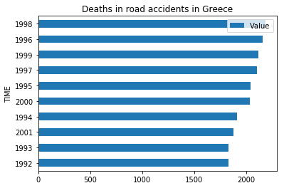
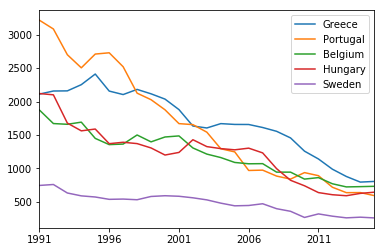
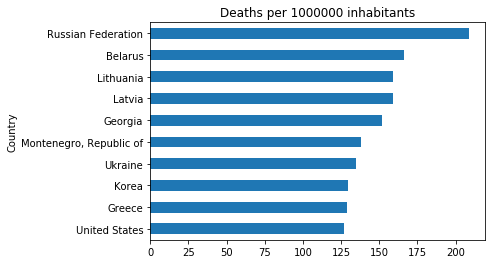
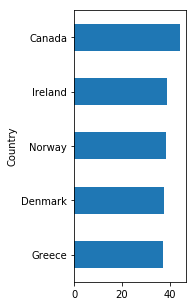
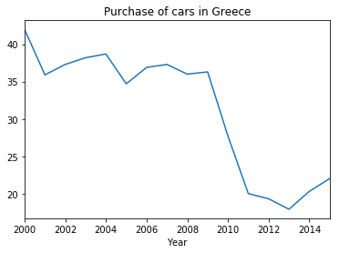
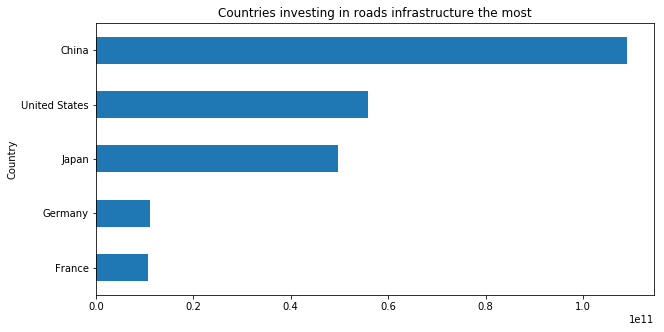
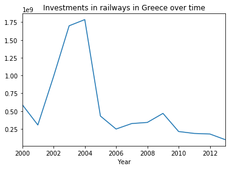
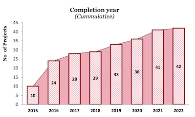

Deadly greek roads; the EU jumps to the rescue
In the last few months there's been a huge discussion in Greece about safety in highways due to a horrific car accident caught on video that caused four people's death. But is this really the case?
A shocking accident with a Porsche out of control on the highway Athens - Lamia in central Greece in which three young adults and a toddler found tragic death became a leading story for quite some time in national news. The luxurious car lost control before exiting the highway and crashed into a parked car at a rest stop killing a young mother and her 3-year old child. The parked car was hit while in a parking space outside of a public restroom, where the father of the three-year-old and husband of the 33-year-old woman had stopped to use the facilities. They were waiting for him to return when impact occurred.
In early 2016 another car accident came to the spotlight. Pantelis Pantelidis, one of Greece’s most popular young singers, was killed in a car crash. The 32-year-old was driving on a southern Athens avenue when he lost control of his car early in the morning.
Both incidents have spurred an extensive discussion in the -stricken by deep recession country- about whether the roads are indeed safe. Data from OECD actually indicate that most deadly cars accidents occured in greek roads in the late 90s. But does this mean things have gotten significantly better?

Numbers are down since then, but maybe still at a high comparative level?
However, statistics from the European Commission on exact number of fatalities since 1991 give a different percepective. Numbers for the vast majority of European countries are indeed down in comparison to the 90s but deaths from car accidents in Greece are currently higher than any other European nation with similar population.

As a matter of fact, when counting road fatalities per one million inhabitants Greece finds itself on the ninth position worldwide, ahead of even the US!

Greeks had long been keen on buying cars
Prior to the economic crisis Greece was among the top 5 countries on earth in the consumption of private vehicles per capita reflecting its citizens' lust for the wheel even if that meant they had to be deprived of other goods. Only Canada, Ireland, Norway and Denmark surpassed Greece up until 2009.

However, when the recession hit, numbers went obviously further down --by more than 100%-- as cars presented an ideal asset to cut back.

But according to transport scientists this development didn't mean Greeks necessarily drove less. It's more likely that during the years that followed, roads got filled mostly with used cars which in many cases haven't been properly repaired as Greeks have been trying to avoid maintenance costs.
Is Greece maybe underinvesting in road infrasructure?
New dataset from OECD with figures about road infrastructure in various countries sheds further light on the increasing lack of investments in this field. Europe's low investment rate has apparently left its infrastructure creaking and Greece hasn't been an exception. The country is clearly trailing in the corresponding list in which China, the US, Japan and only Germany from Europe have secured a front seat.

According to OECD, the infrastructure investment gap in the country is between 1.2 pp of GDP (against the European average) or 2.4 pp of GDP (against historical performance).
Railway infrastructure: Do Greeks have a real alternative to driving?
Based on data from the OECD we draw the conclusion that investments in railway infrastracture are declining in Greece after the 2004 Olympics. That doesn't give an incentive to Greeks to abandon their deep rooted preference to a private vehicle, which increases the risk of fatal accidents given the fact that road infrastructure is also, not at the level it should be

EU invests in major growth-enabling infrastructure in Greece
In March 2017 the EU announced that over €1.3 billion of Cohesion Policy funds will be invested in ten broadband, transport and environmental projects in Greece. More specifically, €377 million will be directed to urban public transport systems in Athens and the region of Attica, over €730 million to the extension of the metro in Thessaloniki, while almost €50 million to sustainable mobility in the Peloponnese peninsula, in the south of Greece. Lastly, €92 million will be invested to achieve better connectivity in the North of Greece.
According to a report from PwC published in early 2015, infrastructure investments in Greece have an economic multiplier of around 2x, which can boost demand of other sectors and lead Greek economy to growth. This measurement indicates that for every euro spent on infrastructure, GDP is further increased by €1.
